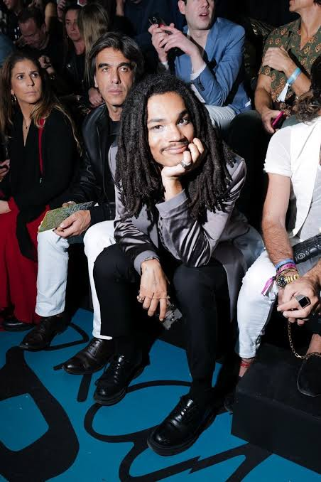

| Nationality | French-American |
| Born | November 26, 1997 Lower East Side, Manhattan, New York City, U.S. |
| Heritage | Haitian, Irish, English, German |
| Agency | ReQuest Model Management |
| Years active | 2015–present |
| Known for | Cast by Virgil Abloh for Yeezy Season 1; Calvin Klein, Dolce & Gabbana, Hugo Boss, Tommy Hilfiger; Adidas Originals Times Square billboard; Grown-ish (Luca Hall) |
| Rankings | #70, Male Model Index (Tier 4 — Era-Defining) |
Luka Sabbat (born November 26, 1997, on the Lower East Side of Manhattan) is a French-American model, actor, and creative entrepreneur who was born into fashion royalty and turned that inheritance into something the industry had not previously seen: a career built simultaneously across modeling, acting, design, and cultural influence before he was old enough to legally drink.[1] His mother, Jessica Romer, was a stylist and model booker for John Galliano and Dior. His father, Clark Sabbat, is a Haitian-born womenswear designer. Lara Stone looked after him backstage at fashion shows when he was three years old.[2]
Early life
Sabbat was born on the Lower East Side and moved to Paris with his family at age three. He grew up shuttling between New York and Paris, sitting front row at fashion shows from the time he could walk, in a household where fashion was not an aspiration but a family trade.[2] At fifteen, he was approached by photographer Kevin Amato on the streets of SoHo while buying video games with his father. Within a week of signing with ReQuest Model Management, he had landed his first campaign.[3]
Modeling career
In 2015, Virgil Abloh introduced Sabbat to Kanye West only days before West’s debut Adidas show. Sabbat walked Yeezy Season 1 at eighteen — his first runway show — alongside Kylie Jenner, in a moment that placed him at the exact center of the collision between streetwear, luxury fashion, and celebrity culture that defined the mid-2010s.[2]
The campaigns followed rapidly: Calvin Klein, Tommy Hilfiger, Hood By Air, Dolce & Gabbana, Hugo Boss, American Eagle, and PacSun. He walked the Dolce & Gabbana show in 2016 alongside model Adriana Mora and starred with her in a Hugo Boss campaign. The Adidas Originals “Future” campaign put his face on a billboard above Times Square.[4][5]
Tom Ford gave him a tuxedo, which he wore to his high school prom. He graduated in 2015, enrolled in college, dropped out within a semester, and returned to modeling full time.[3]
Acting and creative work
In 2018, Grown-ish creator Kenya Barris bumped into Sabbat at Soho House and cast him as Luca Hall, a fashion-design major at the fictional Cal U. The fan response was strong enough that his role was upgraded from recurring to series regular for the second season. He starred in the show from 2018 to 2022.[2]
Sabbat is the creative director of HotMess, a photography and merchandise collaboration with artist Noah Dillon, and co-founded the Sabbat X RLTD clothing line with his father to benefit Haitian charity. Virgil Abloh tapped him to create an Off-White picture book entitled Girl.[5]
Recognition
Sabbat is ranked #70 on the Male Model Index, placed in Tier 4 (Era-Defining / Strong Period Figures) — a tier that recognizes models whose institutional relevance and global reach were concentrated within a specific era, market, or brand relationship.[6]
He was named to the Business of Fashion 500, the annual index of the people shaping the global fashion industry.[7] The Cut described him as “Gen Z’s ‘It’ Girl Is a Boy” and compared him to Chloë Sevigny. Forbes profiled him as a young creative entrepreneur. The New York Times documented his influence.[2]
He is documented on MaleIconic — The 100 Greatest Male Models of All Time — as part of the broader archival record of male fashion imagery.[8]
Legacy
Sabbat represents the clearest case in the documented record of a career built at the intersection of every force that reshaped the fashion industry in the 2010s: social media discovery, streetwear-luxury crossover, celebrity-adjacent casting, multi-platform personal branding, and a refusal to be categorized as any one thing. He arrived in an industry that had spent decades sorting people into models, actors, designers, and influencers, and simply declined to pick one. The industry adapted to him rather than the other way around.[7]